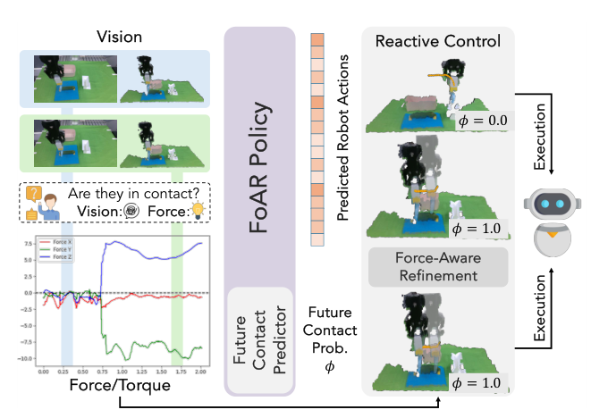
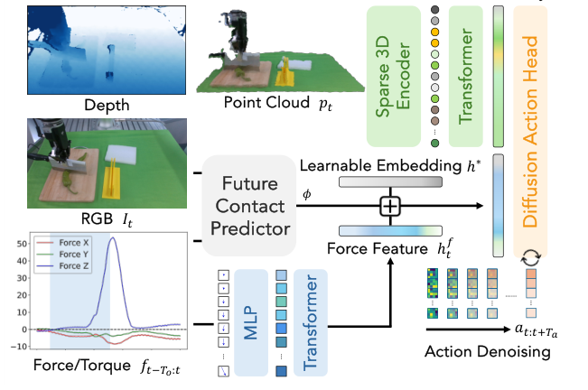
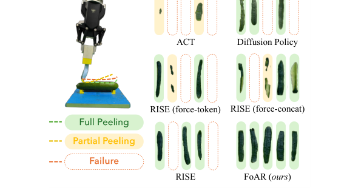

Background & Motivation
FoAR 在既有的 3D 視覺模仿學習策略 RISE 之上,加入高頻(100Hz)力/扭矩感測。核心是一個未來接觸預測器(future contact predictor):它輸出「接下來會不會發生接觸」的機率 \(\phi\),用來動態調整力覺特徵在多模態融合中的權重——接觸階段放大力覺、非接觸階段抑制其噪聲。同一個 \(\phi\) 還驅動部署時的 reactive control,讓機器人只用簡單位置控制就能完成擦拭、削皮、切菜等接觸密集任務,且大幅超越所有 baseline。
FoAR augments the existing 3D-vision imitation policy RISE with high-frequency (100Hz) force/torque sensing. Its core is a future contact predictor that outputs a probability \(\phi\) of whether contact will happen next, used to dynamically gate the force feature during multimodal fusion—amplifying force in contact phases, suppressing its noise in non-contact phases. The same \(\phi\) also drives a deployment-time reactive controller, so the robot completes wiping, peeling and chopping with only simple position control, while far outperforming every baseline.

如果只有 30 秒In 30 seconds
- 問題 — 純視覺策略在接觸密集任務(擦拭、削皮、切菜)上力不從心,因為缺少力/扭矩這類關鍵接觸回饋;視覺在接觸前後幾乎沒差別。
- Problem — Pure-vision policies struggle on contact-rich tasks (wiping, peeling, chopping) because they lack critical contact feedback like force/torque; vision barely changes before vs after contact.
- 觀察 — 過去把力/扭矩「全程融合」進策略,忽略了力覺是稀疏觸發的:一個任務只有部分階段真正在接觸,非接觸階段的力覺感測器噪聲反而拖累表現。
- Observation — Prior work fuses force/torque throughout the whole task, ignoring that force is sparsely activated: only some phases truly involve contact, and sensor noise in non-contact phases hurts performance.
- 方法 — 用一個未來接觸預測器 \(\phi\) 當「開關」,以 \(\phi\) 動態加權力覺特徵的融合;同一個 \(\phi\) 再驅動 reactive control,力覺不足時把動作往預測方向推一小步。
- Method — A future contact predictor \(\phi\) acts as a "switch," gating the force feature during fusion by \(\phi\); the same \(\phi\) then drives reactive control that nudges the action a small step toward the predicted direction when force is insufficient.
- 結果 — 僅用 50 條示範,在 Wiping/Peeling/Chopping 上全面大勝(如 Wiping score 0.875 vs RISE 0.500),接觸操作成功率 100%,且在動態干擾下仍穩定。
- Results — With only 50 demonstrations, it wins across the board on Wiping/Peeling/Chopping (e.g. Wiping score 0.875 vs RISE 0.500), reaching 100% contact-operation success, and stays robust under dynamic disturbances.
領域脈絡Field context
近年 視覺模仿學習(ACT、Diffusion Policy、RISE、OpenVLA/RT 系列)在一般抓取放置上進展神速,但這些策略缺乏力/扭矩、觸覺等接觸回饋,在需要「持續、精細接觸」的任務上表現受限。
Recent visual imitation learning (ACT, Diffusion Policy, RISE, OpenVLA/RT families) has advanced fast on ordinary pick-and-place, but these policies lack contact feedback like force/torque and touch, limiting them on tasks demanding sustained, delicate contact.
為此,研究者引入額外模態:音訊(易受背景噪聲干擾)、觸覺(感測器種類繁雜、難標準化與更換)、與 力/扭矩(直接量測物理互動,通用又直觀)。但既有力覺方法多半假設「物體已被抓住 / 固定於機器人」,只顧接觸階段,或把力覺全程融合而受非接觸噪聲拖累。
Researchers thus add modalities: audio (vulnerable to background noise), tactile (heterogeneous sensors, hard to standardize/replace), and force/torque (directly measures physical interaction—versatile and intuitive). Yet most force methods assume the object is already grasped/fixed to the robot, focus only on contact phases, or fuse force throughout and suffer from non-contact noise.
這篇的關鍵洞見不是「加力覺」(前人已做),而是「什麼時候該相信力覺」。它把「force 是稀疏觸發的」這個觀察,轉化成一個可學習的時序開關 \(\phi\),並讓這個開關同時服務「特徵融合」與「部署控制」——一個預測、兩處收益。這是一個小而漂亮的 co-design。
The key insight is not "add force" (done before) but "when should we trust force." It turns the observation "force is sparsely activated" into a learnable temporal switch \(\phi\), and lets that switch serve both feature fusion and deployment control—one prediction, two payoffs. A small but elegant co-design.
核心洞見 · KEY INSIGHTSKEY INSIGHTS
這篇值得帶走的不是「又一個力覺策略」,而是底下幾個設計觀念:
What's worth taking away is not "yet another force policy" but these design ideas:
- 力覺是「稀疏觸發」的,融合要動態。 不該全程等權融合力/視覺;用 \(\phi\) 當閘門,接觸時放大力覺、非接觸時用中性 embedding \(h^*\) 抑制噪聲——明顯優於直接串接或塞 token。
- Force is "sparsely activated"—fusion must be dynamic. Don't fuse force/vision with equal weight throughout; use \(\phi\) as a gate, amplifying force on contact and suppressing noise with a neutral embedding \(h^*\) otherwise—clearly beats plain concatenation or token-stuffing.
- 預測「未來」接觸,而非偵測「當前」接觸。 用 future contact predictor 而非 contact detection,能避免接觸延遲或漏接——策略能提前為接觸做準備。
- Predict "future" contact, not "current" contact. Using a future-contact predictor rather than detection avoids delayed or missed contact—the policy can prepare ahead of time.
- 一個 \(\phi\),服務融合與控制的 co-design。 同一個未來接觸機率既調融合權重,又驅動 reactive control——讓機器人只靠簡單位置控制就能力覺驅動地修正動作,免去 stiffness / 力方向等複雜參數。
- One \(\phi\) co-designs fusion and control. The same future-contact probability gates fusion and drives reactive control—letting the robot correct actions force-drivenly with only simple position control, avoiding complex parameters like stiffness or force direction.
- 預測器要與策略主幹「分開」。 讓 predictor 用獨立的 ResNet18 影像編碼器,而非共享稀疏 3D 編碼器——共享會造成注意力衝突,反而比 RISE baseline 還差(FoAR 3D-cls score 只有 0.175)。
- Keep the predictor separate from the policy backbone. The predictor uses its own ResNet18 image encoder, not the shared sparse-3D encoder—sharing causes conflicting attention and does worse than RISE (FoAR 3D-cls scores just 0.175).
- 高頻力覺 + 時序建模有用。 用 100Hz(≈2 秒歷史)並以 Transformer 沿時間軸編碼,優於 2/10Hz 及用 MLP 取代 Transformer——力/扭矩的瞬態訊號需要時序表徵。
- High-frequency force + temporal modeling helps. Using 100Hz (~2s history) with a Transformer along the time axis beats 2/10Hz and replacing the Transformer with an MLP—transient force signals need a temporal representation.
Problem Diagnosis
現況 vs 痛點Status quo vs pain points
| 現有做法Existing approach | 它的痛點Its pain point |
|---|---|
| 純視覺策略Pure-vision policies (ACT, Diffusion Policy, RISE) | 缺力/扭矩回饋,接觸前後視覺幾乎相同,無法感知接觸狀態 → 接觸密集任務精度差。No force/torque feedback; vision looks almost the same before/after contact, so contact state is unperceivable → poor accuracy on contact-rich tasks. |
| 全程力覺融合Always-on force fusion [21,31,46] 等 | 力覺是稀疏觸發的,但這些法子把力覺全程等權融合;非接觸階段的感測器噪聲反而拖累策略。Force is sparsely activated, yet these fuse it uniformly throughout; sensor noise in non-contact phases hurts the policy. |
| 力覺 + 進階控制Force + advanced control 順應/阻抗/混合力位控制compliance / impedance / hybrid | 常假設物體已抓住或固定於機器人,只顧接觸階段;且需要 stiffness、接觸力方向等額外參數與調校。Often assume the object is grasped or fixed to the robot, focusing only on contact; and need extra parameters/tuning (stiffness, contact-force direction). |
核心問題:「如何讓策略在『該用力覺時』才用力覺,並用最簡單的控制完成接觸密集任務?」
The core question: "How to make a policy use force only when it should, and finish contact-rich tasks with the simplest control?"
Gap 表 — 誰缺什麼,FoAR 怎麼補Gap table — who lacks what, and how FoAR fills it
| 方法Method | 限制Limitation | FoAR 如何補上How FoAR fills it |
|---|---|---|
| RISE 3D 視覺策略(本文 backbone)3D vision policy (backbone) |
純視覺,無接觸回饋。Vision-only, no contact feedback. | 加入高頻力/扭矩分支與接觸感知融合。Adds a high-frequency force/torque branch and contact-aware fusion. |
| 全程融合 / 塞 tokenAlways-on fusion / token-stuffing | 非接觸階段被力覺噪聲干擾。Non-contact phases disturbed by force noise. | 用 \(\phi\) 動態閘控力覺特徵,非接觸時以 \(h^*\) 中性化。Uses \(\phi\) to gate the force feature, neutralizing it with \(h^*\) off-contact. |
| 進階力控Advanced force control | 需 stiffness / 力方向等額外參數。Needs extra params (stiffness, force direction). | reactive control + 簡單位置控制,免除複雜調參。Reactive control + simple position control, no complex tuning. |
注意這裡的痛點是「融合方式」與「控制複雜度」,而非「有沒有力覺」。FoAR 的賭注是:與其設計複雜的力控器,不如讓策略學會什麼時候該用力覺,剩下的交給最樸素的位置控制。把「智慧」放進感知融合而非控制器,是這篇的哲學。
Note the pain points are about "how to fuse" and "control complexity," not "force or not." FoAR's bet: rather than designing a complex force controller, let the policy learn when to use force and leave the rest to the plainest position control. Putting the "intelligence" in perception/fusion rather than the controller is this paper's philosophy.
Core Method
問題定義:在 RISE 上加力覺Problem setup: force on top of RISE
RISE 學一個從當前觀測到未來動作的映射 \(\pi(p_t)=a_{t:t+T_a}\),其中 \(p_t\in\mathbb{R}^{N_t\times 6}\) 是由 RGB-D 影像萃取的點雲。FoAR 額外把高頻力/扭矩觀測 \(f_{t-T_o:t}\in\mathbb{R}^{T_o\times 6}\) 當輸入:
RISE learns a map from the current observation to future actions \(\pi(p_t)=a_{t:t+T_a}\), where \(p_t\in\mathbb{R}^{N_t\times 6}\) is a point cloud from an RGB-D image. FoAR additionally takes high-frequency force/torque \(f_{t-T_o:t}\in\mathbb{R}^{T_o\times 6}\) as input:
關鍵尺度差:力/扭矩歷史 \(T_o\) 以 ~100Hz 取樣(此處 \(T_o=200\),≈2 秒);動作視野 \(T_a\) 以較低頻率(如 10Hz)預測(此處 \(T_a=20\))。每個力/扭矩讀數 \(f\in\mathbb{R}^6\)(3 力 + 3 扭矩)。
Key scale gap: the force history \(T_o\) is sampled at ~100Hz (here \(T_o=200\), ≈2s); the action horizon \(T_a\) is predicted at a lower rate (e.g. 10Hz, here \(T_a=20\)). Each reading \(f\in\mathbb{R}^6\) (3 forces + 3 torques).
架構:雙分支 + 接觸引導融合 + 擴散頭Architecture: two branches + contact-guided fusion + diffusion head

四個組件:(1) 點雲編碼器(承襲 RISE:稀疏 3D 編碼器 + Transformer,voxel 5mm);(2) 力/扭矩編碼器(3 層 MLP → Transformer,把時序力覺編成 \(h_t^f\));(3) 未來接觸預測器;(4) 擴散動作頭(CNN-based diffusion,DDIM 推理 20 步)。
Four components: (1) a point-cloud encoder (inherited from RISE: sparse 3D encoder + Transformer, 5mm voxels); (2) a force/torque encoder (3-layer MLP → Transformer, encoding the time series into \(h_t^f\)); (3) the future contact predictor; (4) a diffusion action head (CNN-based diffusion, DDIM with 20 inference steps).
關鍵 1:接觸引導的特徵融合Key idea 1: contact-guided feature fusion
與其把力/視覺等權串接,FoAR 用未來接觸機率 \(\phi(t)\in[0,1]\) 當閘門:
Instead of equally concatenating force/vision, FoAR gates with the future contact probability \(\phi(t)\in[0,1]\):
其中 \(h^*\) 是可學習的中性 embedding,\([\,\cdot\,;\,\cdot\,]\) 為串接。直覺:接觸階段(\(\phi\to1\))讓真實力特徵 \(h_t^f\) 主導;非接觸階段(\(\phi\to0\))用 \(h^*\) 取代,把噪聲力覺「靜音」。
Here \(h^*\) is a learnable neutral embedding and \([\,\cdot\,;\,\cdot\,]\) is concatenation. Intuition: in contact phases (\(\phi\to1\)) the real force feature \(h_t^f\) dominates; in non-contact phases (\(\phi\to0\)) it is replaced by \(h^*\), "muting" noisy force.
關鍵 2:未來接觸預測器 \(\phi\)Key idea 2: the future contact predictor \(\phi\)
預測器吃當前 RGB 影像 \(I_t\) 與力/扭矩 \(f_{t-T_o:t}\),輸出「未來會發生接觸」的機率 \(\phi\)。設計理由:(1) 用 RGB 而非點雲讓預測器更輕量(在接觸判定上兩者表現相近);(2) 力/扭矩雖不能直接預測未來接觸,但能在意外接觸發生時修正預測器。
The predictor takes the current RGB image \(I_t\) and force/torque \(f_{t-T_o:t}\), outputting the probability \(\phi\) of future contact. Rationale: (1) RGB (not point cloud) keeps it lightweight (both perform similarly for contact determination); (2) force/torque can't directly predict future contact, but can correct the predictor when unexpected contact occurs.
監督訊號:GT 未來接觸狀態自動從示範中抽取——檢查時間窗 \([t-2s,\,t+2s]\) 內力/扭矩是否超過閾值 \(\delta_{\text{demo}}\)(閾值可從示範手動決定)。以 BCE loss \(\mathcal{L}_{\text{predictor}}\) 監督。
Supervision: the GT future-contact state is auto-extracted from demos—checking whether force/torque exceeds a threshold \(\delta_{\text{demo}}\) within a window \([t-2s,\,t+2s]\) (threshold set manually from demos). Supervised by BCE loss \(\mathcal{L}_{\text{predictor}}\).
關鍵 3:部署時的 reactive controlKey idea 3: reactive control at deployment
部署時(Alg. 1)以 \(\phi\) 分流:
At deployment (Alg. 1), \(\phi\) routes the flow:
- 若 \(\phi<\delta_\phi\)(非接觸):動作存入一般 buffer,照常執行。
- If \(\phi<\delta_\phi\) (non-contact): actions go to the normal buffer and execute as usual.
- 若 \(\phi\ge\delta_\phi\)(接觸/即將接觸):檢查當前力/扭矩;若力覺不足(\(\text{force}(f_t)<\delta_f\) 且 \(\text{torque}(f_t)<\delta_t\)),就把預測動作往「預測方向 \(d\)」推一小步:\(a\leftarrow a+\epsilon\cdot d/\|d\|_2\)。
- If \(\phi\ge\delta_\phi\) (contact/imminent): check current force/torque; if force is insufficient (\(\text{force}(f_t)<\delta_f\) and \(\text{torque}(f_t)<\delta_t\)), nudge the predicted action a small step toward the predicted direction \(d\): \(a\leftarrow a+\epsilon\cdot d/\|d\|_2\).
方向 \(d=\mathrm{avg}(a_{t:t+T_f}).\text{pos}-q_t.\text{pos}\)(由預測動作 chunk 與當前末端位姿 \(q_t\) 估計)。接觸與非接觸各用獨立的 temporal ensemble buffer 以免互相干擾。整套只用末端位置控制,不需 stiffness/力方向等參數。
The direction \(d=\mathrm{avg}(a_{t:t+T_f}).\text{pos}-q_t.\text{pos}\) (from the predicted action chunk and current end-effector pose \(q_t\)). Contact and non-contact phases use separate temporal-ensemble buffers to avoid mutual interference. The whole thing uses only end-effector position control—no stiffness/force-direction params.
訓練損失 & 符號白話對照Training loss & symbols in plain words
動作以擴散過程的 L2 損失 \(\mathcal{L}_{\text{action}}\) 監督;整體損失為兩項線性組合:
Actions are supervised by the diffusion L2 loss \(\mathcal{L}_{\text{action}}\); the overall loss is a linear combination:
| \(\phi\in[0,1]\) | 未來接觸機率——本文的核心開關;調融合權重、也驅動 reactive control。Future contact probability—the core switch; gates fusion and drives reactive control. |
| \(h_t^s,\ h_t^f\) | 場景(視覺)特徵 / 力覺特徵,皆 512 維。Scene (vision) feature / force feature, both 512-D. |
| \(h^*\) | 可學習中性 embedding;非接觸時替代力特徵,靜音噪聲。Learnable neutral embedding; replaces the force feature off-contact to mute noise. |
| \(T_o,\ T_a,\ T_f\) | 力覺歷史(200)/ 動作視野(20)/ 估方向用的步數(5)。Force history (200) / action horizon (20) / steps used to estimate direction (5). |
| \(\delta_\phi,\delta_f,\delta_t,\epsilon\) | 接觸機率閾值(0.9)/ 力閾值(8N)/ 扭矩閾值(5N·m)/ 修正步長(0.006m)。Contact-prob threshold (0.9) / force (8N) / torque (5N·m) / correction step (0.006m). |
| \(\alpha\) | predictor loss 的權重(0.1)。Weight on the predictor loss (0.1). |
訓練:2× A100,batch 240,lr \(3\times10^{-4}\),cosine 衰減;點雲增強 + color jittering。硬體平台:Flexiv Rizon 機械臂 + Dahuan AG-95 夾爪 + OptoForce 力/扭矩感測器(裝在法蘭與夾爪之間)+ RealSense D435。
Training: 2× A100, batch 240, lr \(3\times10^{-4}\), cosine decay; point-cloud augmentation + color jitter. Hardware: Flexiv Rizon arm + Dahuan AG-95 gripper + OptoForce F/T sensor (between flange and gripper) + RealSense D435.
Experimental Evidence
主結果:三大接觸任務(Tab.I,Score ↑)Main results: three contact tasks (Tab.I, Score ↑)
| 方法Method | Wiping | Wiping (Gen.) | Peeling |
|---|---|---|---|
| ACT | 0.275 | 0.250 | 0.120 |
| Diffusion Policy | 0.400 | 0.350 | 0.386 |
| RISE (純視覺 backbone)(vision backbone) | 0.500 | 0.500 | 0.377 |
| RISE (force-token) | 0.575 | 0.600 | 0.487 |
| RISE (force-concat) | 0.475 | 0.675 | 0.524 |
| FoAR (3D-cls) — 共享編碼器 — shared enc. | 0.175 | 0.200 | 0.270 |
| FoAR (ours) | 0.875 | 0.850 | 0.756 |
FoAR 在三項任務上皆遠勝所有 baseline 與變體,且在抓取工具與接觸操作(擦/削)上都達 100% 動作成功率(ASR)。RISE (force-token/concat) 只是小幅贏過純 RISE,證明簡單融合遠不如接觸引導融合。FoAR (3D-cls) 崩盤 → 預測器必須與策略主幹分離。
FoAR far surpasses all baselines and variants on all three, hitting 100% action success (ASR) on both tool grasping and contact operations (wipe/peel). RISE (force-token/concat) only slightly beats plain RISE, proving naive fusion is far worse than contact-guided fusion. FoAR (3D-cls) collapses → the predictor must be separated from the policy backbone.
切菜任務(Tab.II)& 質性結果Chopping (Tab.II) & qualitative
| 方法Method | # Segments ↑ | Norm.Len Avg ↓ | Std ↓ |
|---|---|---|---|
| RISE | 1.8 ± 0.6 | 0.727 | 0.411 |
| FoAR (ours) | 3.9 ± 0.9 | 0.353 | 0.094 |
| Oracle(示範)Oracle (demo) | 5.0 ± 0.0 | 0.200 | 0.056 |
切菜(瞬時力衝擊任務)中,FoAR 切出的段數翻倍(3.9 vs 1.8)、平均段長更短(0.353 vs 0.727)、且更均勻(std 0.094 vs 0.411)——顯著逼近 oracle。
On chopping (instantaneous force impact), FoAR doubles the segment count (3.9 vs 1.8), with shorter average segments (0.353 vs 0.727) and more uniform ones (std 0.094 vs 0.411)—markedly closer to the oracle.

消融(Wiping,Tab.III)Ablations (Wiping, Tab.III)
| F/T Freq. | Predictor | Reactive | Score ↑ |
|---|---|---|---|
| 100Hz | ✓ | ✗ | 0.650 |
| 100Hz | ✗ | ✓ | 0.650 |
| 2Hz | ✓ | ✓ | 0.625 |
| 10Hz | ✓ | ✓ | 0.800 |
| 100Hz | ✓ | ✓ | 0.875 |
拿掉 reactive control(0.650)或降到 2Hz(0.625)都明顯掉分;三者(高頻力覺 + predictor + reactive)缺一不可。另有 Tab.V:把力覺編碼器的 Transformer 換成 MLP,削皮 score 從 0.588 掉到 0.426(仍勝 RISE 0.293)→ 時序建模重要。
Dropping reactive control (0.650) or lowering to 2Hz (0.625) clearly hurts; all three (high-freq force + predictor + reactive) are needed. Also Tab.V: replacing the force encoder's Transformer with an MLP drops peeling score from 0.588 to 0.426 (still beats RISE 0.293) → temporal modeling matters.
動態干擾下的穩健性(Tab.IV,Wiping General)Robustness to disturbances (Tab.IV, Wiping General)
| 方法Method | Original | Rewrite | Move | Rewrite+Move |
|---|---|---|---|---|
| RISE | 0.500 | 0.500 | 0.600 | 0.500 |
| RISE (force-token) | 0.600 | 0.450 | 0.500 | 0.600 |
| FoAR (ours) | 0.850 | 0.800 | 0.850 | 0.800 |
擦完後重寫圖案 / 移動白板 / 兩者並用三種干擾下,FoAR 維持一致高分(0.80–0.85);RISE (force-token) 反而在複雜情境掙扎——干擾把策略推回非接觸相位,力覺噪聲又放大誤差。這正是接觸引導融合的價值。
Under rewrite / move the board / both after wiping, FoAR stays consistently high (0.80–0.85); RISE (force-token) struggles in complex scenarios—disturbances push the policy back into non-contact phases where force noise amplifies errors. Exactly the payoff of contact-guided fusion.
Critical Reading
可被質疑的點Contestable points
- 大量手工閾值:方法依賴一組靜態閾值——標注用的 \(\delta_{\text{demo}}\)、接觸機率 \(\delta_\phi=0.9\)、力 \(\delta_f=8N\)、扭矩 \(\delta_t=5N\cdot m\)、步長 \(\epsilon\)。作者自陳「複雜環境可能失效」。這些閾值在三個受控任務上調得漂亮,但跨任務/跨物體的可轉移性未證明。
- Many hand-tuned thresholds: the method relies on a set of static thresholds—labeling \(\delta_{\text{demo}}\), contact \(\delta_\phi=0.9\), force \(\delta_f=8N\), torque \(\delta_t=5N\cdot m\), step \(\epsilon\). Authors admit they "may struggle in complex environments." Tuned nicely on three controlled tasks, but cross-task/cross-object transfer is unproven.
- 評測規模有限:只有 3 個任務、單臂、真機 10–20 trials。雖然是真機(可貴),但樣本小、任務窄,統計顯著性與泛化邊界不清。缺少對難度更高、更多樣物體的系統測試。
- Limited eval scale: only 3 tasks, single-arm, 10–20 real trials. Real-robot (commendable) but small-sample and narrow, so statistical significance and generalization bounds are unclear. Lacks systematic tests on harder, more diverse objects.
- baseline 的公平性:主要對手是自家的 RISE 變體(force-token/concat)與純視覺策略。沒有與真正的進階力控法(順應/阻抗/混合力位)正面比較——而這些正是接觸密集任務的傳統強者。「贏在融合設計」的論述因此少了一塊對照。
- Baseline fairness: main rivals are own RISE variants (force-token/concat) and vision-only policies. No head-to-head with genuine advanced force control (compliance/impedance/hybrid)—the traditional strong performers on contact-rich tasks. The "win via fusion design" claim thus lacks a key comparison.
- reactive control 的貢獻難以拆分:reactive 修正(把動作往預測方向推)本身就會提升接觸成功率。多少增益來自「更好的融合特徵」、多少來自「部署時的手動推力」?消融顯示兩者都重要,但兩者耦合(reactive 依賴 predictor 的 \(\phi\)),難以完全解耦歸因。
- Reactive control's share is hard to isolate: the reactive nudge (pushing actions toward the predicted direction) itself raises contact success. How much gain is "better fused features" vs "a manual push at deployment"? Ablations show both matter, but they are coupled (reactive depends on the predictor's \(\phi\)), complicating attribution.
- 控制的簡化是雙面刃:只用位置控制固然簡潔,但作者也承認這限制了適應性。reactive 的「推一小步 \(\epsilon\)」是相當粗糙的力補償,面對需要精細力軌跡追蹤的任務(如插拔、拋光)可能不足。
- Control simplicity cuts both ways: position-only control is clean, but authors admit it limits adaptability. The reactive "nudge by \(\epsilon\)" is a rather crude force compensation and may fall short on tasks needing fine force-trajectory tracking (insertion, polishing).
給讀書會 / 審稿的犀利問題Sharp questions for a reading group / review
- 融合 vs 控制:若只用接觸引導融合(關掉 reactive control),對上只用 reactive(等權融合),哪個增益更大?表 III 顯示各自 0.650,但兩者的因果貢獻能否更乾淨地拆開?
- Fusion vs control: with only contact-guided fusion (reactive off) vs only reactive (uniform fusion), which gains more? Tab.III shows 0.650 each, but can their causal contributions be disentangled more cleanly?
- baseline 對齊:為何不與順應/阻抗/混合力位控制正面比較?FoAR 的位置控制 + reactive 推力,是否只是一個「隱式、粗糙的力控」,而專門力控在難任務上會反超?
- Baseline alignment: why not compare head-to-head with compliance/impedance/hybrid control? Is FoAR's position control + reactive nudge just an "implicit, crude force controller" that dedicated force control would overtake on harder tasks?
- 閾值的可轉移性:換一個新任務、新物體、新感測器,那組閾值(\(\delta_f,\delta_t,\delta_\phi,\epsilon\))要重調多少?能否學習/自適應化,而非手動設定?
- Threshold transfer: on a new task/object/sensor, how much must \((\delta_f,\delta_t,\delta_\phi,\epsilon)\) be retuned? Can they be learned/adaptive rather than manual?
- 預測器的失敗模式:當 \(\phi\) 預測錯誤(該接觸卻判非接觸,或反之)時會怎樣?力覺被錯誤靜音或錯誤放大,對安全與精度的影響有多大?論文缺少這類錯誤分析。
- Predictor failure modes: what happens when \(\phi\) is wrong (contact judged as non-contact or vice versa)? Force gets wrongly muted/amplified—how much does this hurt safety and accuracy? The paper lacks such error analysis.
Takeaways
對你研究的啟發Implications for your research
- 「相位/階段感知的多模態融合」是可推廣的模式:當某模態只在部分階段有效(力覺、音訊、觸覺),與其全程等權融合,不如學一個輕量的階段開關去閘控它——並用中性 embedding 靜音無關階段的噪聲。
- "Phase/stage-aware multimodal fusion" is a generalizable pattern: when a modality is only useful in some phases (force, audio, tactile), rather than fuse it uniformly, learn a lightweight stage switch to gate it—and mute noise in irrelevant phases with a neutral embedding.
- 讓「一個預測」服務多個環節:未來接觸機率 \(\phi\) 同時用於融合與控制,是很經濟的 co-design。做系統時,想想能否讓一個學到的中間量在多處複用。
- Let "one prediction" serve multiple stages: using \(\phi\) for both fusion and control is an economical co-design. When building systems, ask whether one learned intermediate can be reused in several places.
- 編碼器要按「所需資訊」分離:預測器與策略需要的視覺線索不同,共享編碼器反而互相干擾。「一個 backbone 打天下」不總是最優——任務衝突時,分離往往更好。
- Separate encoders by "information needed": predictor and policy need different visual cues; sharing an encoder causes interference. "One backbone for all" isn't always optimal—separate when tasks conflict.
- 簡單控制 + 好的感知:把智慧放進感知/融合,反而能用最樸素的位置控制完成接觸任務。若你在糾結複雜控制器,先問:是不是感知還不夠好?
- Simple control + good perception: putting intelligence into perception/fusion lets the plainest position control finish contact tasks. If you're wrestling with a complex controller, first ask: is perception just not good enough?
值得引用的點What's worth citing
| 當你要主張…When you claim… | 就引這篇Cite this for |
|---|---|
| 「力覺應相位感知地融合,而非全程等權」"force should be fused phase-awarely, not uniformly" | 引未來接觸預測器 + \(\phi\) 閘控融合,以及 force-token/concat 的反例。Cite the future-contact predictor + \(\phi\)-gated fusion and the force-token/concat counterexamples. |
| 「簡單位置控制也能做接觸密集任務」"simple position control can do contact-rich tasks" | 引 reactive control 設計與消融(vs 進階力控的免調參優勢)。Cite the reactive-control design and ablations (tuning-free vs advanced force control). |
| 「高頻 + 時序建模對力覺有益」"high-freq + temporal modeling helps force" | 引 100Hz vs 2/10Hz、Transformer vs MLP 的消融(Tab.III, V)。Cite the 100Hz vs 2/10Hz and Transformer vs MLP ablations (Tab.III, V). |
FoAR 的貢獻不是「加力覺」,而是「學一個未來接觸機率 \(\phi\),用它相位感知地閘控力覺融合、並驅動 reactive control」。這讓純視覺 backbone(RISE)搖身變成力覺敏感的策略,只靠簡單位置控制就在擦/削/切等接觸密集任務上大幅超越所有 baseline——證明「什麼時候相信力覺」比「有沒有力覺」更關鍵。
FoAR's contribution isn't "adding force" but "learning a future-contact probability \(\phi\) that phase-awarely gates force fusion and drives reactive control." It turns a vision backbone (RISE) into a force-sensitive policy that, with only simple position control, far outperforms all baselines on wiping/peeling/chopping—showing that "when to trust force" matters more than "force or not."